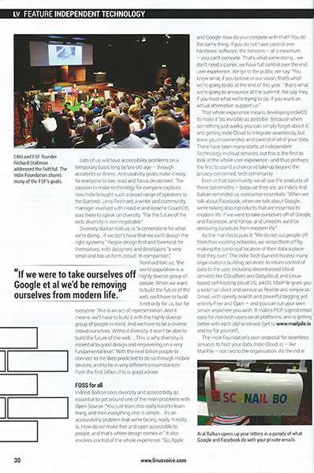
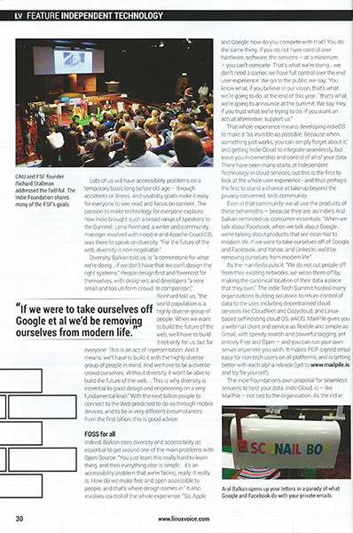

Indie Tech Summit featured in Linux Voice Magazine
6th November, 2014 —

 


The Indie Tech Summit was featured in Linux Voice Magazine’s November 2014 Issue 008.
Richard Smedley was at the summit and wrote a fantastic four-page report covering the event, our manifesto, phone, and crowdfunding.
You can find Linux Voice magazine in good newsagents, or buy Issue #8 of Linux Voice magazine on their website.